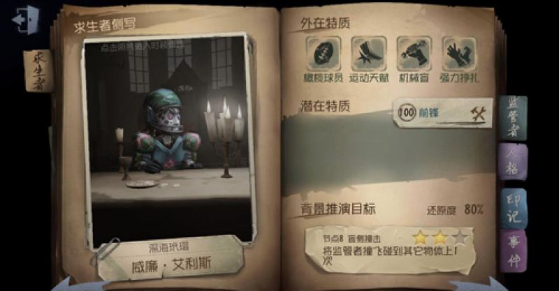

前鋒

【人物介紹】
名字：威廉‧艾利斯
拉格比足球正吸引著人們的注意力，然而自詡為這項新興運動的創始人，威廉·艾利斯卻正在被人遺忘。他加入了一個小型的橄欖球俱樂部，但他很快發現，事情並不如自己預計的那麼順利。也許歐利蒂絲莊園的主人能為他帶來一些幫助？
【能力介紹】
橄欖球員：隨身攜帶橄欖球，快速衝刺力竭後陷入眩暈。衝刺一段距離後可撞飛監管者，其碰到其他物體則會陷入更長的眩暈。
運動天賦：極佳運動天賦，其翻越板窗速度增加20%、放板速度增加50%，被砸暈的監管者恢復所需時間增加15%。
機械盲：笨手笨腳，不擅長使用機械製品，破譯密碼機的速度降低30%。
強力掙扎：身強體壯，被監管者抓起後更容易掙脫，掙扎速度加快10%。
初始道具為橄欖球，前鋒翻越板窗速度快，加上使用橄欖球可以撞暈監管者，是逃生能力優秀的角色，但前鋒破譯速度慢，適合干擾監管者使其他隊友可以專心破譯。
